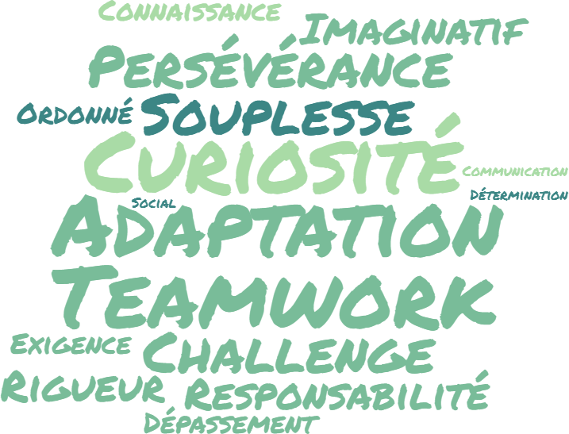

Qui suis-je ?
Je m'appelle Benjamin Clairotte. Je suis un jeune homme de 21 ans
curieux de tout. Je dispose d’un bac+2 en développement web acquis
avec la formation OpenClassrooms. Cette formation diplômante et
reconnue par l’Etat m’a permis de travailler sur des projets
concrets. Lors de ma formation, j’ai pu apprendre à coder en HTML,
PUG, CSS, SASS, JS, node.JS, API REST, bootstrap, mySQL, MongoDB
en plus d’avoir pu utiliser git et github. J’ai appris de nombreux
langages en plus de notions importantes comme l’optimisation de
SEO et de l’accessibilité d’un site web. Dans le dernier projet de
ma formation, j’ai appris à utiliser Vue.js et VueX.
Je suis actuellement en recherche d’une alternance afin de
poursuivre mes études pour atteindre un bac+4. Je suis ouvert à la
mobilité et motivé. Le type de contrat, apprentissage ou
professionnalisation, sera selon votre choix. Lors de ma
formation, je me suis aussi entouré de personnes extrêmement
douées qui ont participé à mon apprentissage sur les logiciels
Photoshop et Sony Vegas 18, logiciels que je maîtrise bien
maintenant.
mes compétences.
Vue.Js
html5.
Js.
Css3.
Sass.
Node.Js
npm.
git.
Github.
Pug.
Responsive.
MongoDB.
MySQL .
API .
Concentrez-vous sur ce qui est important, je m'occupe de tout le reste en accord avec vos demandes.
mes qualités.
Portfolio.

Projet numéro 5 & 6 d'OpenClassrooms
Les projets numéro 5 & 6 d'OpenClassrooms consistent à utiliser une api côté frontend pour le 5 et créer l'api côté backend pour le projet 6. Pour réduire mes coûts, ces sites sont lancés manuellement quand je les utilise. Ils ne sont donc pas disponibles.
Projet numéro 7 d'OpenClassrooms
Le projet numéro 7 d'OpenClassrooms consiste à construire un réseau social avec VueJS et VueX mais également SQL, pour avoir une base de données plus gérable.
Et bien d'autres en préparation et dans le futur... Vous pouvez retrouver tous les codes source des sites présentés, ils sont tous disponibles sur mon Github.
Recommandations.
Dylan Bouvier alias Pwcca
Community manager chez Misfit, Streamer
dyl.bouvier@gmail.com

Joffrey Hernandez
Mentor chez OpenClassrooms
Joffrey.hernandez@gmail.com
Ayant déjà vu de quoi j'étais capable ils me recommandent et peuvent se rendre disponibles pour répondre à vos questions me concernant avant un éventuel recrutement.
Contact.
Pour toute proposition de travail ou d'alternance je vous invite à me contacter via mon email; benjaminclairottepro@gmail.com ci-dessous. Ou au 06.51.69.95.36.
Vous pouvez toujours me contacter sur mes réseaux .